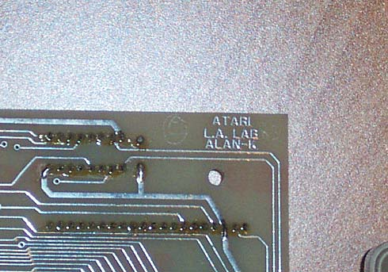
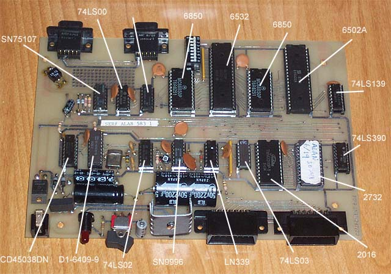
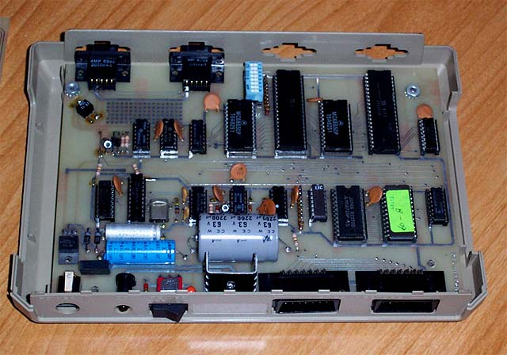

ClubMed
Project Report
(Adobe
PDF File)
ALAN-K
(Atari LAN Model-K)
Atari users have always wished for and wanted to join the ranks of other computers like the Apple and IBM in the networking arena. Apple with its Appletalk network and IBM's with a plethora of networks from Arcnet to Token Ring to Ethernet and so forth. Atari's while powerful, versatile and flexible, never seemed to jump into the networking bandwagon with the exception of the use of ribbon cable interface boxes connected to MUX's into Corvus Hard Drives to share data. Corvus would later introduce its Omni-net network, alas the Atari computers were not to join in on its innovation. CSS (Computer Software Services) around 89-90 introduced its MUX network, a group of cartridges that with ribbon cables would allow one Atari 8bit computer to be a master and the others to be slaves that could access its disk drives and printer, while not as fancy as other networks, it did the job.

It turns out, that during the years of Atari's Corporate Research, around 1983 networking did come to Atari's in the form of "ALAN-K". Playing on the name of Alan Kay, Atari's Chief Scientist and head of Atari's Advanced Research Labs. These labs were spread all over the country: Sunnyvale, Ca. Los Angeles, Ca. New York City, Cambridge, Ma. ALAN-K was born....

ALAN-K stood for Atari Local Area Network, Model-K. It was made up of modules inside of standard Atari 850 plastic cases and equipped with 2 SIO connectors and on the back 2 - 9 pin female connectors. According to Rob Newman, former Corporate Researcher "The network was setup in a circle, similar to Token Ring". Each module had a 8 switch setting to set the address of the module.

The modules have an onboard Eprom with code on it, however unlike the 850
interfaces, these modules do not appear to autoload, so examining the functionality
of them is not possible at this time until a boot disk with the needed
software to boot the ALAN's is located. The Atari
History Museum has 2 of these interfaces in its archives and it is hoped
to one day have them working again to show at one of the public Classic
Computing Shows. Dumps of the ROM's have been made available
below, they appear to be slightly different from one another, CRC's are
included.
|
CRC $E248 |
CRC $0C85 |
The ALAN-K network was fully deployed at one site, at the Club Med resort
in Mexico where kiosks were setup around the resort for people to communicate
with one another, look up events and other information.
Atari's Corporate Research team was dispatched down to the resort to install
the network, below is an actual recount of the event that took place and
the trials and tribulations that followed. Corporate
Research did approach Atari's Marketing Department with the idea of commercially
selling the Network Modules, however the idea was turned down as too much
time and effort would have had to be put into selling the product and Marketing
wanting products that could instantly generate revenue. So
unfortunately another product designed within Atari, well ahead of its
time that would've once again shown the world how powerful and versatile
Atari computers were was quietly kept in-house and out of the public's
reach.

ClubMed
Project Report
(Adobe
PDF File)